2026-10-28 · P3-R01 · 原v5睡袋 + 显式 sleepPose=v2 动作候选
人物上胸从固定头枕前方对齐，肩颈不再呈现“只有头部露出”的遮挡；原生骨段、比例、网格、权重、睡眠根约束点与头枕/背垫/硬框保持。手臂改为在上身对齐后摆放，最终休息逐渐闭眼。319项工程检查通过，整体视觉仍待用户确认。
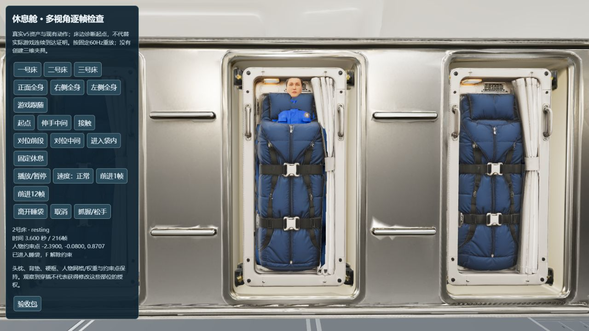
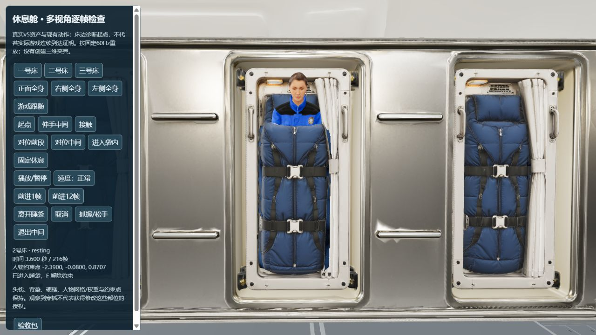
下列为实际来源模型、实际resting状态。床边诊断起点用于逐帧检查，不代替从初始扶手连续到达的游戏证明。图片保留实际状态，固定机位定义见诊断脚本，补拍记录包含镜头坐标；被柜体挡住的首次机位单独保留。
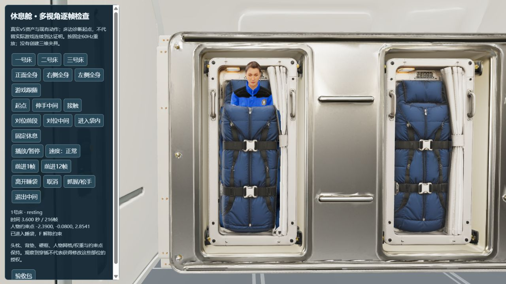
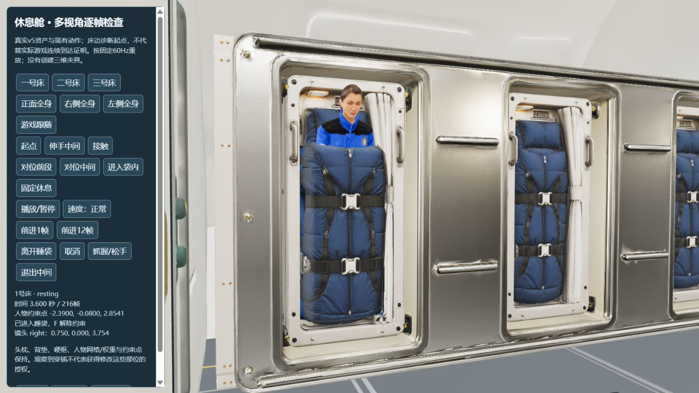
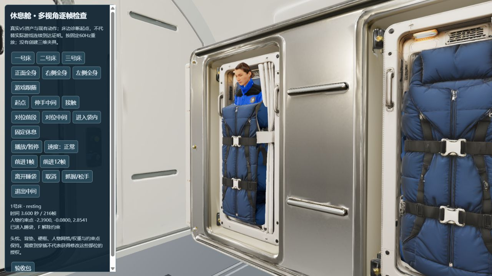
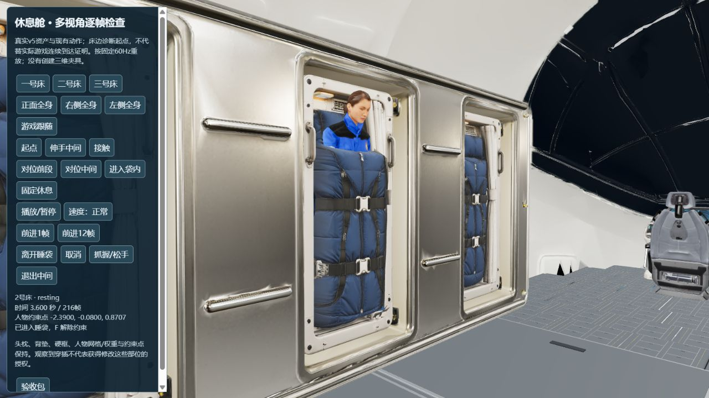
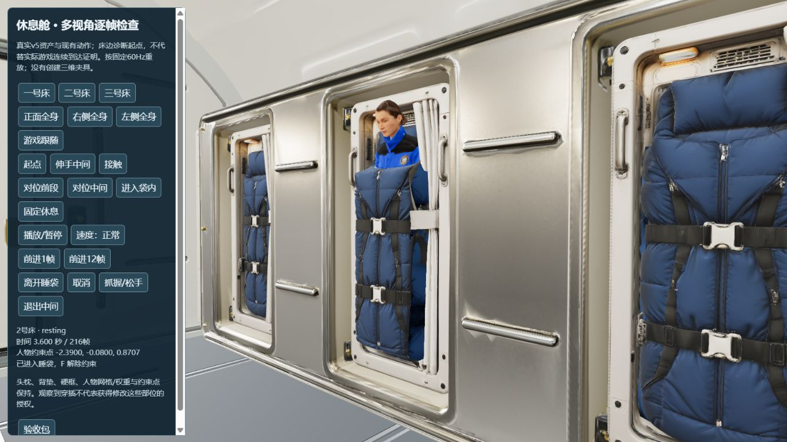
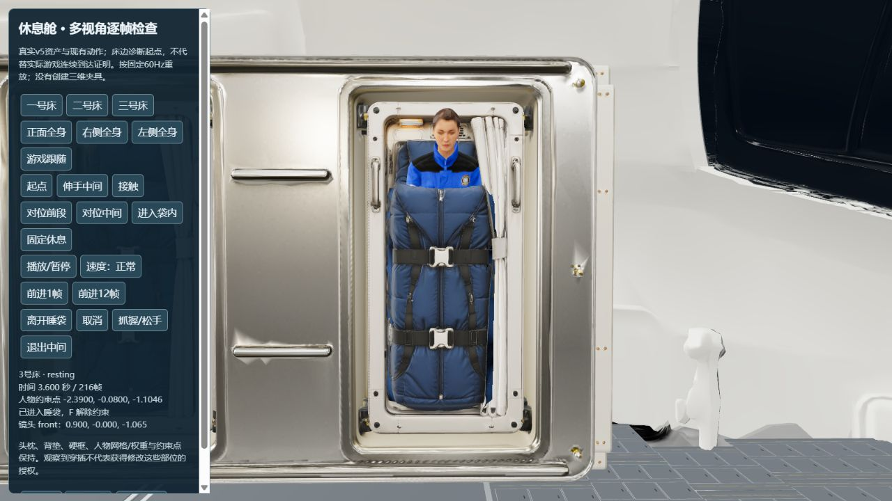
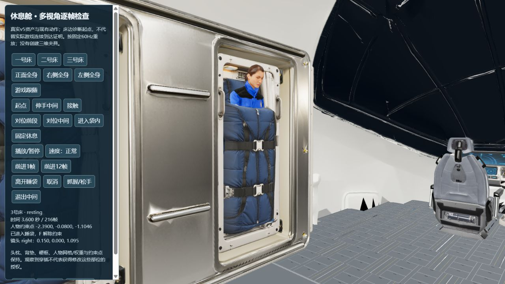
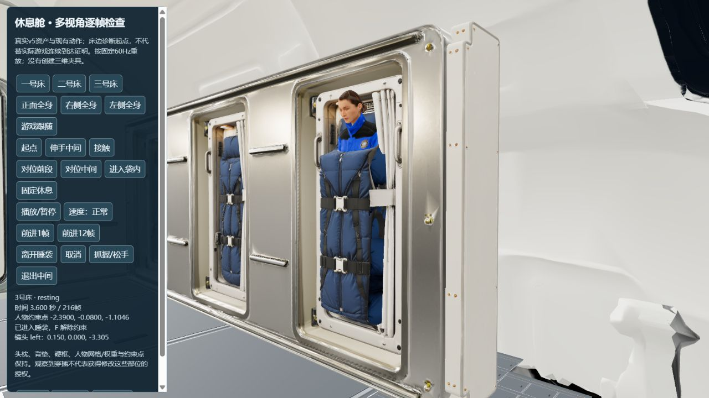
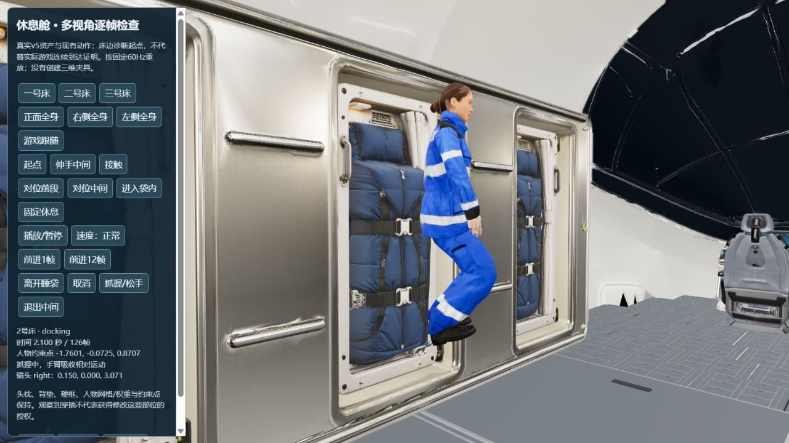
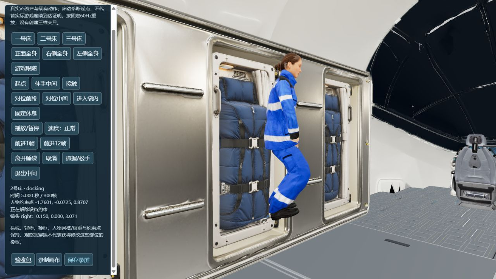
从原初始扶手推离，取消伸手后重试、进入二号床、暂停/继续、退出、X重新抓握。无床边坐标设定。视频只录WebGL画布，无音轨/HUD；关键HUD另存图片。
已在本机完整播放：1600×900、27.798秒，无播放错误；末帧可见重新抓握姿态。
同一来源与动作，床边诊断起点；按固定60Hz推进，运行时速度为四分之一。本片覆盖进入及固定休息，录屏达到60秒上限后自动停止；退出请看上方实际连续录像，可用四分之一速度回看。它不能替代实际游戏连续到达证明。
已在本机完整播放：1600×900、59.945秒，无播放错误。
| 检查 | 本轮结果 |
|---|---|
| 来源保护 | 人物、睡袋、v4/v5 GLB哈希保持；本轮没有制作新三维几何或改权重。 |
| 动作与接触 | 上胸对齐避开原骨架的腿部分支；先调整上胸再摆放手臂。三床进出、实际漂移取消重试、退出重抓、暂停及保存重建已回归。 |
| 工程 | 319项测试、类型检查和生产构建通过；保留原碰撞、1.05米身体触达、0.65米/秒抓握与12毫米掌面接触要求。 |
| 仍待完成 | 用户对人物、衣服和睡袋整体视觉的判断；来源仍是医护服，原带扣/褶皱贴图较粗，软袋使用预设姿态而非布料物理。完整EVA、目标设备、冷加载、20分钟和手机交付仍未验收。 |